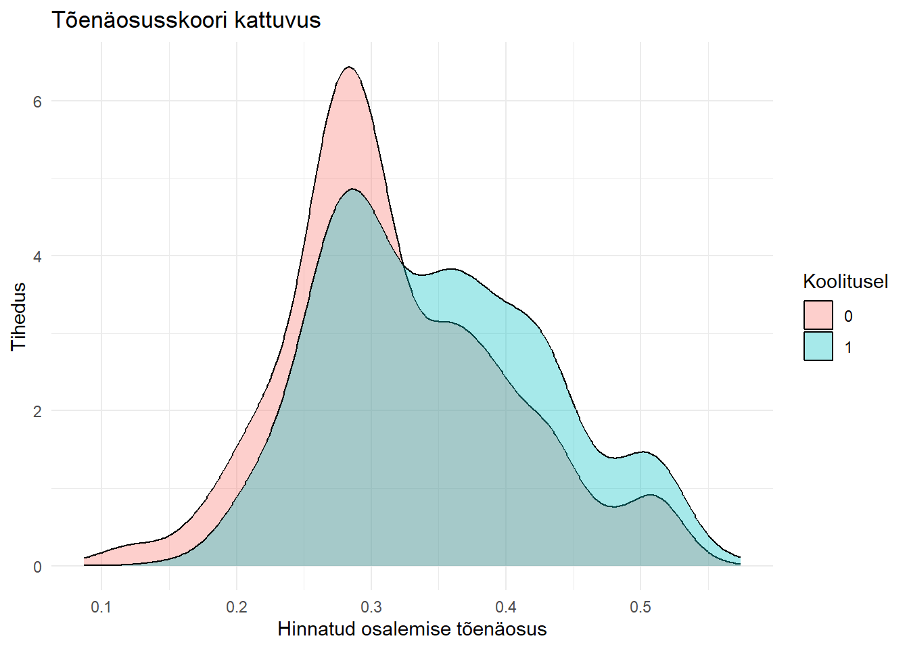

library(dplyr)
library(ggplot2)
library(sandwich)
library(lmtest)
atp <- read.csv("http://kodu.ut.ee/~avork/files/oppetoo/micro/atp.csv")
atp <- atp |>
select(training, employed, male, est, age, age2, educ, emplbefore) |>
mutate(educ = factor(educ))8 Pöördtõenäosusega kaalumine (IPW) ja AIPW
NB! Tähistused ühtlustamata. Lisada viited
Selles peatükis vaatame, kuidas hinnata põhjuslikku mõju kaalumise abil. Põhiidee on väga sarnane sobitamisele: tahame muuta osalus- ja võrdlusrühma taustatunnuste jaotused omavahel võrreldavaks. Sobitamisel valisime igale osalejale ühe või mitu sarnast võrdlusisikut. Kaalumisel jätame põhimõtteliselt kõik vaatlused alles, kuid anname neile erineva kaalu.
Peatüki lõpuks peaksid oskama:
- selgitada, miks täpne sobitamine rühmade lõikes on käsitletav kaalumisena;
- tuletada ATE, ATT ja ATU jaoks kasutatavad IPW-kaalud;
- eristada Horvitz–Thompsoni ja Hájeki IPW-hinnangut;
- selgitada, miks suured kaalud viitavad halvale kattuvusele (overlap);
- kirjeldada AIPW-hinnangut kahel samaväärsel viisil;
- arvutada IPW- ja AIPW-hinnanguid R-is.
8.1 Sobitamisest kaalumiseni
Alustame lihtsast näitest. Oletame, et soovime hinnata tööturukoolituse mõju palgale. Inimesed elavad kas Põhja- või Lõuna-Eestis ning oletame lihtsuse mõttes, et piirkond on ainus taustatunnus, mida peame arvesse võtma.
| Piirkond | Osalejaid \(N_{1s}\) | Võrdlusrühmas \(N_{0s}\) | Osalejate keskmine \(\bar Y_{1s}\) | Võrdlusrühma keskmine \(\bar Y_{0s}\) |
|---|---|---|---|---|
| Põhja-Eesti | 40 | 30 | 150 | 120 |
| Lõuna-Eesti | 20 | 10 | 150 | 140 |
| Kokku | 60 | 40 |
Siin tähendab \(D=1\) koolitusel osalemist ja \(D=0\) mitteosalemist. Tähistame piirkonda indeksiga \(s\).
ATT täpse sobitamise abil
Kui meid huvitab keskmine mõju osalejatele (average treatment effect on the treated, ATT), siis peab võrdlusrühm esindama osalejate piirkondlikku jaotust.
Osalejatest elab
\[ \frac{40}{60} \]
Põhja-Eestis ja
\[ \frac{20}{60} \]
Lõuna-Eestis. Seega
\[ \begin{aligned} ATT &= \frac{40}{60}(150-120) + \frac{20}{60}(150-140) \\ &=23.33. \end{aligned} \]
Sama hinnangu saame nii, et anname võrdlusrühma inimestele piirkonniti erineva kaalu. Põhja-Eestis peab 30 võrdlusrühma inimest esindama 40 osalejat, mistõttu igaühe kaal on
\[ w_{0,N}=\frac{40}{30}. \]
Lõuna-Eestis peab 10 võrdlusrühma inimest esindama 20 osalejat, mistõttu
\[ w_{0,S}=\frac{20}{10}=2. \]
Osalejate kaal on ATT puhul 1. Pärast kaalumist on võrdlusrühma efektiivne piirkondlik koosseis sama mis osalejatel:
| Piirkond | Osalejaid | Võrdlusrühmas | Võrdlusrühma kaal | Kaalutud võrdlusrühm |
|---|---|---|---|---|
| Põhja-Eesti | 40 | 30 | \(40/30\) | 40 |
| Lõuna-Eesti | 20 | 10 | \(20/10\) | 20 |
| Kokku | 60 | 40 | 60 |
See ongi kaalumise põhiidee: me ei pea tingimata leidma igale osalejale konkreetset paarilist. Võime muuta olemasolevate võrdlusisikute suhtelist tähtsust nii, et nad esindaksid osalejate jaotust.
Kuidas siit tekib tõenäosusskoor?
Olgu piirkonnas \(s\) koolitusel osalemise tõenäosus
\[ p_s=P(D=1\mid X=s) =\frac{N_{1s}}{N_{1s}+N_{0s}}. \]
Siis
\[ 1-p_s=\frac{N_{0s}}{N_{1s}+N_{0s}}. \]
Nende suhe on
\[ \frac{p_s}{1-p_s} = \frac{N_{1s}/(N_{1s}+N_{0s})} {N_{0s}/(N_{1s}+N_{0s})} = \frac{N_{1s}}{N_{0s}}. \]
Seega ATT jaoks leitud võrdlusrühma kaal
\[ w_0(X)=\frac{p(X)}{1-p(X)} \]
on lihtsalt täpse sobitamise kaal \(N_1/N_0\), kirjutatud osalemise tõenäosuse abil.
TähtisSeos sobitamise ja kaalumise vahel
Kui \(X\) moodustab lõpliku arvu täpseid rühmi, siis saab kaalumist vaadata täpse sobitamise üldistusena. Kui \(X\) sisaldab palju tunnuseid või pidevaid tunnuseid, pole identseid inimesi enamasti olemas. Siis hindame \(p(X)=P(D=1\mid X)\) mudeliga ja kasutame sellest tuletatud kaale.
ATU: sihtrühmaks on mitteosalejad
Kui soovime hinnata mõju neile, kes ei osalenud (average treatment effect on the untreated, ATU), peavad osalejad esindama mitteosalejate jaotust.
Seetõttu jääb mitteosalejate kaaluks 1 ning osalejate kaal on
\[ \frac{N_{0s}}{N_{1s}} = \frac{1-p_s}{p_s}. \]
Seega
\[ w_1(X)=\frac{1-p(X)}{p(X)}, \qquad w_0(X)=1. \]
Meie näites
\[ ATU = \frac{30}{40}(150-120) + \frac{10}{40}(150-140) =25. \]
ATE: sihtrühmaks on kogu üldkogum
ATE puhul peab nii osalus- kui võrdlusrühm esindama kogu üldkogumi piirkondlikku jaotust.
Piirkonnas \(s\) on kokku
\[ N_s=N_{1s}+N_{0s} \]
inimest. Et \(N_{1s}\) osalejat esindaks kõiki \(N_s\) selle piirkonna inimesi, peab osaleja kaal olema
\[ \frac{N_s}{N_{1s}} = \frac{1}{p_s}. \]
Samamoodi peab võrdlusrühma kaal olema
\[ \frac{N_s}{N_{0s}} = \frac{1}{1-p_s}. \]
Seega ATE-kaalud on
\[ w_1(X)=\frac{1}{p(X)}, \qquad w_0(X)=\frac{1}{1-p(X)}. \]
Meie näites on kogu valimist 70% Põhja- ja 30% Lõuna-Eestist. Seega
\[ ATE =0.7(150-120)+0.3(150-140) =24. \]
Näeme, et ATE, ATT ja ATU ei pea olema võrdsed. Need kasutavad erinevat sihtrühma ning annavad erineva keskmise juhul, kui meetme mõju erineb taustatunnuste lõikes.
8.2 Üldine raamistik
Olgu
- \(D_i\in\{0,1\}\) – osalemise indikaator;
- \(Y^1_i\) – isiku \(i\) potentsiaalne tulemus osalemise korral;
- \(Y^0_i\) – isiku \(i\) potentsiaalne tulemus mitteosalemise korral;
- \(Y_i=D_iY^1_i+(1-D_i)Y^0_i\) – vaadeldav tulemus;
- \(X_i\) – enne meetmes osalemist mõõdetud taustatunnused;
- \(p(X_i)=P(D_i=1\mid X_i)\) – tõenäosusskoor (propensity score).
Kasutame tähist \(p(X)\), kuid empiirilises osas on meil tavaliselt selle hinnang
\[ \hat p_i=\widehat P(D_i=1\mid X_i). \]
Pane tähele, et kirjanduses, eriti masinõppe valdkonnas, tähistatakse propensity score’i sageli ka \(e(X)\)-ga.
Eeldused
IPW tugineb samadele identifitseerimise eeldustele nagu tõenäosusskooril põhinev sobitamine.
1. Tinglik sõltumatus (conditional independence, unconfoundedness)
\[ \{Y^1,Y^0\}\perp D\mid X. \]
Pärast \(X\) arvesse võtmist ei tohi olla järelejäänud mõõtmata segajaid, mis mõjutavad nii osalemist kui ka tulemust.
2. Kattuvus ehk positiivsus (overlap, positivity)
ATE jaoks nõuame
\[ 0<p(X)<1. \]
Iga analüüsitava \(X\) väärtuse juures peab leiduma nii osalejaid kui ka mitteosalejaid.
3. Järjepidevus (consistency)
Kui \(D_i=d\), siis vaadeldud tulemus võrdub vastava potentsiaalse tulemusega:
\[ Y_i=Y_i(d). \]
MärkusIPW ei lahenda mõõtmata segajate probleemi
Kaalumine tasakaalustab ainult neid tunnuseid, mis on kaasatud \(X\) hulka või mida kasutatud mudel suudab nende kaudu tasakaalustada. Kui oluline segaja jääb mõõtmata, ei muuda keerukam kaalumismeetod seda probleemi automaatselt olematuks.
8.3 IPW üldkogumis
ATE
Keskmine põhjuslik mõju kogu üldkogumis on
\[ ATE=E[Y^1-Y^0]. \]
Tingliku sõltumatuse korral saame esimese potentsiaalse tulemuse keskmise kirjutada
\[ E[Y^1] = E\left[\frac{DY}{p(X)}\right], \]
ja teise
\[ E[Y^0] = E\left[\frac{(1-D)Y}{1-p(X)}\right]. \]
Seetõttu
\[ ATE = E\left[ \frac{DY}{p(X)} - \frac{(1-D)Y}{1-p(X)} \right]. \]
Miks esimene võrdus töötab? Tingides \(X\) järgi,
\[ \begin{aligned} E\left[\frac{DY}{p(X)}\mid X\right] &= \frac{1}{p(X)}E[D Y^1\mid X] \\ &= \frac{P(D=1\mid X)}{p(X)}E[Y^1\mid X] \\ &= E[Y^1\mid X]. \end{aligned} \]
Viimases sammus kasutasime tinglikku sõltumatust. Keskmistades üle \(X\) jaotuse saame \(E[Y^1]\).
ATT
ATT on
\[ ATT=E[Y^1-Y^0\mid D=1]. \]
Olgu
\[ \pi=P(D=1). \]
Siis
\[ ATT = \frac{1}{\pi} E\left[ DY - (1-D)\frac{p(X)}{1-p(X)}Y \right]. \]
ATT puhul ei ole osalejaid vaja ümber kaaluda: nemad ongi sihtrühm. Ümber kaalutakse võrdlusrühm, et selle \(X\) jaotus sarnaneks osalejate jaotusega.
ATU
ATU on
\[ ATU=E[Y^1-Y^0\mid D=0]. \]
Olgu \(1-\pi=P(D=0)\). Siis
\[ ATU = \frac{1}{1-\pi} E\left[ D\frac{1-p(X)}{p(X)}Y - (1-D)Y \right]. \]
ATU puhul on mitteosalejad ise sihtrühm ning ümber kaalutakse osalejad.
Kolm hinnangut ühe tabelina
| Hinnatav mõju | Osaleja \((D=1)\) kaal | Mitteosaleja \((D=0)\) kaal | Sihtrühm |
|---|---|---|---|
| ATE | \(1/p(X)\) | \(1/[1-p(X)]\) | kogu üldkogum |
| ATT | \(1\) | \(p(X)/[1-p(X)]\) | osalejad |
| ATU | \([1-p(X)]/p(X)\) | \(1\) | mitteosalejad |
Neid kolme kaalupaari saab kirjutada ka ühe üldise valemina. Olgu \(h(X)\) funktsioon, mis kirjeldab sihtrühma. Siis
\[ w_1(X)=\frac{h(X)}{p(X)}, \qquad w_0(X)=\frac{h(X)}{1-p(X)}. \]
Valides
\[ h(X)=1 \]
saame ATE; valides \(h(X)=p(X)\) saame ATT ning valides \(h(X)=1-p(X)\) saame ATU.
8.4 Mida kaalumine teeb?
ATE-kaalude korral on osaleja kaal
\[ \frac{1}{p(X)}. \]
Kui \(p(X)\) on väike, siis on sellise \(X\) väärtusega osaleja haruldane ning ta saab suure kaalu. Ta esindab paljusid sarnaseid inimesi, kes tegelikult osalejate hulka ei sattunud.
Mitteosaleja kaal on
\[ \frac{1}{1-p(X)}. \]
Kui \(p(X)\) on suur, on sellise \(X\) väärtusega mitteosaleja haruldane ning saab suure kaalu.
Intuitiivselt loob IPW pseudo-üldkogumi, kus osalemine ei sõltu enam \(X\) jaotusest. Korrektselt määratud ATE-kaalude korral kehtib näiteks iga sobiva funktsiooni \(g(X)\) jaoks
\[ E\left[\frac{D}{p(X)}g(X)\right] = E[g(X)] \]
ja
\[ E\left[\frac{1-D}{1-p(X)}g(X)\right] = E[g(X)]. \]
Seega kaalutud osalus- ja võrdlusrühm esindavad mõlemad sama \(X\) jaotust.
8.5 IPW valimis
Praktikas me \(p(X)\) ei tea. Hindame selle näiteks logit- või probit-mudeliga ning saame iga isiku jaoks \(\hat p_i\).
Tähistame valimi suuruse \(n\), osalejate arvu \(n_1\) ja mitteosalejate arvu \(n_0\).
Horvitz–Thompsoni hinnang
ATE otsene valimianaloog on
\[ \widehat{ATE}_{HT} = \frac{1}{n} \sum_{i=1}^n \left[ \frac{D_iY_i}{\hat p_i} - \frac{(1-D_i)Y_i}{1-\hat p_i} \right]. \]
ATT korral
\[\widehat{ATT}_{HT} = \frac{1}{n_1} \sum_{i=1}^n \left[ D_iY_i - (1-D_i)\frac{\hat p_i}{1-\hat p_i}Y_i \right]. \]
ATU korral
\[ \widehat{ATU}_{HT} = \frac{1}{n_0} \sum_{i=1}^n \left[ D_i\frac{1-\hat p_i}{\hat p_i}Y_i - (1-D_i)Y_i \right]. \]
Horvitz–Thompsoni hinnang on kõige otsesem üldkogumi valemite valimianaloog. Selle nõrk külg on see, et üksikud väga suured kaalud võivad hinnangut tugevasti mõjutada.
8.6 Alternatiivne IPW-hinnang: Hájeki normaliseeritud hinnang
Praktikas kasutatakse sageli normaliseeritud kaale. Selle asemel, et jagada kaalutud summa \(n\), \(n_1\) või \(n_0\)-ga, jagame iga rühma kaalutud summa selle rühma kaalude summaga.
ATE
\[ \widehat{ATE}_{H} = \frac{\sum_i D_iY_i/\hat p_i} {\sum_i D_i/\hat p_i} - \frac{\sum_i (1-D_i)Y_i/(1-\hat p_i)} {\sum_i (1-D_i)/(1-\hat p_i)}. \]
See on lihtsalt kahe kaalutud keskmise erinevus.
ATT
\[ \widehat{ATT}_{H} = \frac{\sum_i D_iY_i}{\sum_i D_i} - \frac{\sum_i (1-D_i)\dfrac{\hat p_i}{1-\hat p_i}Y_i} {\sum_i (1-D_i)\dfrac{\hat p_i}{1-\hat p_i}}. \]
ATU
\[ \widehat{ATU}_{H} = \frac{\sum_i D_i\dfrac{1-\hat p_i}{\hat p_i}Y_i} {\sum_i D_i\dfrac{1-\hat p_i}{\hat p_i}} - \frac{\sum_i (1-D_i)Y_i}{\sum_i(1-D_i)}. \]
MärkusHorvitz–Thompson või Hájek?
Horvitz–Thompsoni kuju on teooriaga kõige otsesemalt seotud. Hájeki hinnang normaliseerib kaalud rühmade sees ning on lõplikus valimis sageli stabiilsem. Suures valimis lähenevad mõlemad samale sihtparameetrile, kui tõenäosusskoori mudel on korrektselt määratud.
Mõnikord nimetatakse normaliseerimist ka kaalude stabiliseerimiseks. Kitsamas terminoloogias tähendavad stabilized weights siiski kaale, mille lugejas kasutatakse marginaalset osalemistõenäosust, näiteks ATE korral \(P(D=1)/p(X)\) osalejatele. Seetõttu kasutame siin selguse huvides terminit normaliseeritud Hájeki hinnang.
Sama hinnang kaalutud regressiooniga
Kui hindame mudeli
\[ Y_i=\alpha+\tau D_i+u_i \]
kaalutud vähimruutude meetodil, kasutades ATE-, ATT- või ATU-kaale, siis \(\hat\tau\) on vastavate kaalutud keskmiste erinevus. Seega annab lihtne kaalutud regressioon sama punktihinnangu kui Hájeki kujul käsitsi arvutatud kaalutud keskmiste erinevus.
See on mugav arvutusviis, eriti kui soovime kohe kasutada regressiooniväljundit või robustseid standardvigu.
8.7 Kattuvus ja suured kaalud
IPW nõrk koht on väike või väga suur tõenäosusskoor.
ATE puhul
\[ w_i= \begin{cases} 1/\hat p_i, & D_i=1,\\ 1/(1-\hat p_i), & D_i=0. \end{cases} \]
Kui osalejal on \(\hat p_i\approx 0\), võib tema kaal muutuda väga suureks. Kui mitteosalejal on \(\hat p_i\approx 1\), juhtub sama.
See ei ole ainult tehniline probleem. Suur kaal ütleb sisuliselt, et selle inimese sarnaseid vaatlusi teises rühmas on väga vähe. Me püüame siis hinnata põhjuslikku mõju piirkonnas, kus andmed annavad vähe infot.
Praktikas kontrollime vähemalt:
- tõenäosusskooride kattuvust osalus- ja võrdlusrühmas;
- kaalude jaotust ja maksimaalseid kaale;
- taustatunnuste tasakaalu pärast kaalumist;
- efektiivset valimi suurust.
Kaalutud valimi efektiivne suurus on
\[ ESS = \frac{\left(\sum_i w_i\right)^2} {\sum_i w_i^2}. \]
Kui üksikud vaatlused saavad väga suure kaalu, võib \(ESS\) olla palju väiksem kui tegelik vaatluste arv.
HoiatusÄra vali tõenäosusskoori mudelit ainult prognoositäpsuse järgi
IPW eesmärk ei ole ennustada võimalikult täpselt, kes osaleb. Eesmärk on saada pärast kaalumist hea taustatunnuste tasakaal. Seetõttu tuleb tõenäosusskoori mudelit hinnata ka selle järgi, kas kaalumine tasakaalustab olulised segajad.
8.8 AIPW: kaalumine koos regressiooniga
IPW kasutab osalemismudelit
\[ p(X)=P(D=1\mid X). \]
Regressiooniga korrigeerimine (regression adjustment, RA) kasutab omakorda tulemuse mudeleid
\[ m_1(X)=E[Y\mid D=1,X] \]
ja
\[ m_0(X)=E[Y\mid D=0,X]. \]
AIPW (augmented inverse probability weighting) ühendab mõlemad.
Järgnevalt keskendume ATE-le. ATT ja ATU jaoks saab konstrueerida analoogsed sihtrühmapõhised topeltrobustsed hinnangud, kuid ATE kuju näitab kõige selgemalt AIPW põhiideed.
8.9 AIPW esimene kuju: regressiooniprognoos + IPW-ga kaalutud jääk
Regressiooniga korrigeerimise korral prognoosiksime iga inimese jaoks
\[ \hat m_1(X_i) \]
ja
\[ \hat m_0(X_i) \]
ning arvutaksime
\[ \widehat{ATE}_{RA} = \frac{1}{n}\sum_{i=1}^n \left[ \hat m_1(X_i)-\hat m_0(X_i) \right]. \]
AIPW alustab samast prognoosist, kuid parandab prognoosi seal, kus tegelik tulemus on vaadeldav.
Osalemise korral defineerime korrigeeritud potentsiaalse tulemuse
\[ \tilde Y^1_i = \hat m_1(X_i) + \frac{D_i}{\hat p_i} \left[Y_i-\hat m_1(X_i)\right]. \]
Mitteosalemise korral
\[ \tilde Y^0_i = \hat m_0(X_i) + \frac{1-D_i}{1-\hat p_i} \left[Y_i-\hat m_0(X_i)\right]. \]
Seega
\[ \widehat{ATE}_{AIPW} = \frac{1}{n}\sum_{i=1}^n \left[ \tilde Y^1_i-\tilde Y^0_i \right]. \]
Kirjutades kõik ühe valemina,
\[ \widehat{ATE}_{AIPW} = \frac{1}{n}\sum_{i=1}^n \left\{ \hat m_1(X_i)-\hat m_0(X_i) + \frac{D_i}{\hat p_i}[Y_i-\hat m_1(X_i)] - \frac{1-D_i}{1-\hat p_i}[Y_i-\hat m_0(X_i)] \right\}. \]
Seda kuju on kasulik meelde jätta kui
\[ \text{AIPW} = \text{regressiooniga prognoositud mõju} + \text{IPW-ga kaalutud prognoosivead}. \]
Regressioon annab iga inimese puuduva potentsiaalse tulemuse kohta prognoosi. IPW osa kontrollib seda prognoosi nende inimeste juures, kelle vastav tulemus on tegelikult vaadeldav.
8.10 AIPW teine kuju: IPW + regressiooniga parandustermin
Sama valemit saab ümber rühmitada nii, et alustame tavalisest IPW-hinnangust:
\[ \begin{aligned} \widehat{ATE}_{AIPW} = \frac{1}{n}\sum_{i=1}^n \Bigg\{ &\underbrace{ \frac{D_iY_i}{\hat p_i} - \frac{(1-D_i)Y_i}{1-\hat p_i} }_{\text{IPW}} \\ &+ \underbrace{ \left(1-\frac{D_i}{\hat p_i}\right)\hat m_1(X_i) - \left(1-\frac{1-D_i}{1-\hat p_i}\right)\hat m_0(X_i) }_{\text{regressiooniga parandustermin}} \Bigg\}. \end{aligned} \]
Seega võime AIPW-d vaadata ka kui
\[ \text{AIPW} = \text{IPW} + \text{regressiooniga parandustermin}. \]
Need kaks esitust on algebrailiselt täpselt samad. Esimene kuju on tavaliselt intuitiivsem, kui oleme juba õppinud regressiooniga korrigeerimist. Teine kuju näitab paremini, miks meetodi nimes on sõna augmented: tavalisele IPW-le lisatakse tulemusemudelist tulev parandustermin.
Miks AIPW on topeltrobustne?
AIPW oluline omadus on topeltrobustsus (double robustness). Lihtsustatult:
- kui osalemismudel \(p(X)\) on õigesti määratud, võib tulemusemudel olla valesti määratud;
- kui tulemusemudelid \(m_1(X)\) ja \(m_0(X)\) on õigesti määratud, võib osalemismudel olla valesti määratud;
- hinnang on endiselt kooskõlaline, kui vähemalt üks neist kahest mudeliosast on korrektne.
Näiteks kui \(p(X)\) on korrektne, siis
\[ E\left[ \hat m_1(X) + \frac{D}{p(X)}(Y-\hat m_1(X)) \mid X \right] = E[Y^1\mid X] \]
ka siis, kui \(\hat m_1(X)\) ise pole õige regressioonifunktsioon.
Kui aga \(m_1(X)\) on korrektne, siis jäägi
\[ Y-m_1(X) \]
tinglik keskmine on null ja korrigeerimistermini ootus kaob.
HoiatusTopeltrobustne ei tähenda „vigade suhtes immuunne”
AIPW ei ole korrektne, kui nii osalemismudel kui ka tulemusemudel on valesti määratud. Samuti jääb vajalikuks kattuvuse eeldus: väga väikesed või väga suured \(\hat p_i\) võivad AIPW jäägiparanduse muuta väga ebastabiilseks.
8.11 IPW ja AIPW praktiline töövoog
Tüüpiline analüüs koosneb järgmistest sammudest:
- vali enne osalemist mõõdetud segajad \(X\);
- hinda osalemise tõenäosus \(\hat p(X)\);
- kontrolli kattuvust;
- moodusta soovitud sihtrühma jaoks ATE-, ATT- või ATU-kaalud;
- kontrolli kaalude jaotust ja taustatunnuste tasakaalu;
- arvuta IPW-hinnang;
- AIPW korral hinda lisaks tulemusemudelid \(\hat m_1(X)\) ja \(\hat m_0(X)\);
- arvuta AIPW-hinnang;
- arvuta standardvead või usaldusvahemikud viisil, mis arvestab kogu hindamisprotsessi.
8.12 R-i näide: Eesti tööturukoolituse andmed
Jätkame varem kasutatud Eesti tööturukoolituse näitega. Tulemusmuutuja employed näitab, kas inimene oli pärast programmi hõivatud, ning training näitab koolitusel osalemist.
Paketid ja andmed
Kõigepealt vaatame lihtsat erinevust osalejate ja mitteosalejate vahel.
atp |>
group_by(training) |>
summarise(
n = n(),
employment_rate = mean(employed),
.groups = "drop"
)# A tibble: 2 × 3
training n employment_rate
<int> <int> <dbl>
1 0 878 0.590
2 1 429 0.709mean(atp$employed[atp$training == 1]) -
mean(atp$employed[atp$training == 0])[1] 0.1186475See erinevus ei ole veel põhjusliku mõju hinnang, sest koolitusel osalenud ja mitteosalenud võivad erineda taustatunnuste poolest.
1. Hinda osalemise tõenäosus
Hindame logit-mudeli
\[ P(D_i=1\mid X_i)=\Lambda(X_i\gamma). \]
ps_model <- glm(
training ~ male + age + age2 + est + educ + emplbefore,
data = atp,
family = binomial(link = "logit")
)
atp$pscore <- predict(ps_model, type = "response")
summary(atp$pscore) Min. 1st Qu. Median Mean 3rd Qu. Max.
0.08677 0.27060 0.31087 0.32823 0.38732 0.57421 Joonistame tõenäosusskooride jaotuse mõlemas rühmas.
ggplot(atp, aes(x = pscore, fill = factor(training))) +
geom_density(alpha = 0.35) +
labs(
x = "Hinnatud osalemise tõenäosus",
y = "Tihedus",
fill = "Koolitusel",
title = "Tõenäosusskoori kattuvus"
) +
theme_minimal()
Otsime eelkõige piirkondi, kus üks rühm praktiliselt puudub. Just seal tekivad väga suured IPW-kaalud.
2. Moodusta ATE-, ATT- ja ATU-kaalud
atp <- atp |>
mutate(
ate_w = if_else(
training == 1,
1 / pscore,
1 / (1 - pscore)
),
att_w = if_else(
training == 1,
1,
pscore / (1 - pscore)
),
atu_w = if_else(
training == 1,
(1 - pscore) / pscore,
1
)
)Vaatame, kui suured kaalud tekkisid.
atp |>
summarise(
ate_max = max(ate_w),
att_max = max(att_w),
atu_max = max(atu_w)
) ate_max att_max atu_max
1 6.524299 1.197537 5.524299ATE-kaalude efektiivne valimi suurus on näiteks
ess <- function(w) {
sum(w)^2 / sum(w^2)
}
ess(atp$ate_w)[1] 1104.07Soovi korral saab tasakaalu kontrollida paketiga cobalt, mida kasutasime ka sobitamise juures.
library(cobalt)
bal.tab(
training ~ male + est + age + age2 + educ + emplbefore,
data = atp,
weights = atp$ate_w,
method = "weighting",
estimand = "ATE"
)3. IPW: Hájeki hinnang
Kirjutame abifunktsiooni kaalutud keskmiste erinevuse jaoks.
ipw_hajek <- function(y, d, w) {
weighted.mean(y[d == 1], w[d == 1]) -
weighted.mean(y[d == 0], w[d == 0])
}
ate_ipw_h <- ipw_hajek(atp$employed, atp$training, atp$ate_w)
att_ipw_h <- ipw_hajek(atp$employed, atp$training, atp$att_w)
atu_ipw_h <- ipw_hajek(atp$employed, atp$training, atp$atu_w)
c(
ATE = ate_ipw_h,
ATT = att_ipw_h,
ATU = atu_ipw_h
) ATE ATT ATU
0.10551899 0.09620311 0.11006912 Selle andmestiku varasemas analüüsis saime ligikaudu
\[ \widehat{ATE}_{H}=0.1055, \qquad \widehat{ATT}_{H}=0.0962, \qquad \widehat{ATU}_{H}=0.1101. \]
Kuna employed on binaarne, võib ATE-d tõlgendada siin ligikaudu 10.6 protsendipunktise erinevusena hõive tõenäosuses pärast taustatunnuste tasakaalustamist.
4. IPW: Horvitz–Thompsoni hinnang
ATE standardne Horvitz–Thompsoni valem on
ate_ipw_ht <- mean(
atp$training * atp$employed / atp$pscore -
(1 - atp$training) * atp$employed / (1 - atp$pscore)
)
ate_ipw_ht[1] 0.1014682Sama andmestiku varasemas analüüsis oli tulemuseks ligikaudu
\[ \widehat{ATE}_{HT}=0.1015. \]
See erineb veidi Hájeki hinnangust, sest lõplikus valimis ei summeeru hinnatud pöördkaalud täpselt nii, nagu need summeeruksid ideaalses pseudo-üldkogumis.
5. Sama Hájeki hinnang kaalutud regressiooniga
ate_reg <- lm(employed ~ training, data = atp, weights = ate_w)
att_reg <- lm(employed ~ training, data = atp, weights = att_w)
atu_reg <- lm(employed ~ training, data = atp, weights = atu_w)
c(
ATE = coef(ate_reg)["training"],
ATT = coef(att_reg)["training"],
ATU = coef(atu_reg)["training"]
)ATE.training ATT.training ATU.training
0.10551899 0.09620311 0.11006912 Punktihinnangud langevad kokku eespool arvutatud kaalutud keskmiste erinevustega.
Robustse standardvea saab näiteks nii:
coeftest(ate_reg, vcov. = vcovHC(ate_reg, type = "HC1"))
t test of coefficients:
Estimate Std. Error t value Pr(>|t|)
(Intercept) 0.597357 0.016659 35.8576 < 2.2e-16 ***
training 0.105519 0.028287 3.7303 0.0001994 ***
---
Signif. codes: 0 '***' 0.001 '**' 0.01 '*' 0.05 '.' 0.1 ' ' 1
HoiatusStandardvead
Lihtne vcovHC() käsitleb kasutatud kaale arvutuses etteantutena. Tegelikult on \(\hat p_i\) hinnatud samast valimist. Kui soovime standardvigu, mis arvestavad kogu protseduuri ebakindlust, tuleb kasutada sobivat analüütilist variatsioonivalemit või bootstrap’ida kogu protseduur: võtta uus valim, hinnata uuesti tõenäosusskoor, arvutada uuesti kaalud ja seejärel mõju.
8.13 AIPW R-is
Nüüd lisame kaks tulemusemudelit. Jääme õppimise lihtsustamiseks sama lineaarse mudeli juurde, mida oleme selles näites varem kasutanud.
outcome_model_1 <- lm(
employed ~ male + est + age + age2 + educ + emplbefore,
data = atp[atp$training == 1, ]
)
outcome_model_0 <- lm(
employed ~ male + est + age + age2 + educ + emplbefore,
data = atp[atp$training == 0, ]
)
atp <- atp |>
mutate(
m1 = predict(outcome_model_1, newdata = atp),
m0 = predict(outcome_model_0, newdata = atp)
)AIPW viis 1: prognoos + kaalutud jääk
Arvutame iga inimese jaoks korrigeeritud potentsiaalsed tulemused.
atp <- atp |>
mutate(
y1_aipw = m1 + training / pscore * (employed - m1),
y0_aipw = m0 + (1 - training) / (1 - pscore) * (employed - m0),
tau_aipw_1 = y1_aipw - y0_aipw
)
ate_aipw_1 <- mean(atp$tau_aipw_1)
ate_aipw_1[1] 0.1060233Selle andmestiku varasemas analüüsis saime ligikaudu
\[ \widehat{ATE}_{AIPW}=0.1060. \]
AIPW viis 2: IPW + parandustermin
Arvutame nüüd täpselt sama hinnangu teise valemi abil.
atp <- atp |>
mutate(
ipw_part =
training * employed / pscore -
(1 - training) * employed / (1 - pscore),
augmentation_part =
(1 - training / pscore) * m1 -
(1 - (1 - training) / (1 - pscore)) * m0,
tau_aipw_2 = ipw_part + augmentation_part
)
ate_aipw_2 <- mean(atp$tau_aipw_2)
ate_aipw_2[1] 0.1060233Kontrollime, et kaks kuju annavad sama tulemuse.
all.equal(ate_aipw_1, ate_aipw_2)[1] TRUETulemus peaks olema TRUE.
AIPW seos regressiooniga korrigeerimise ja IPW-ga
Võrdluseks arvutame ka puhta regressiooniga korrigeerimise hinnangu.
ate_ra <- mean(atp$m1 - atp$m0)
c(
RA = ate_ra,
IPW_Hajek = ate_ipw_h,
IPW_HT = ate_ipw_ht,
AIPW = ate_aipw_1
) RA IPW_Hajek IPW_HT AIPW
0.1059810 0.1055190 0.1014682 0.1060233 Need hinnangud ei pea lõplikus valimis olema täpselt võrdsed. Kui nii osalemismudel kui ka tulemusemudel kirjeldavad andmeid hästi, on nad sageli üsna lähedased.
8.14 Miks kasutada AIPW-d?
IPW ja regressiooniga korrigeerimine lahendavad sama identifitseerimisprobleemi erinevalt.
IPW küsib:
Kui palju peaks iga vaatluse tähtsust muutma, et osalus- ja võrdlusrühm esindaksid sama sihtrühma?
Regressiooniga korrigeerimine küsib:
Milline oleks iga inimese prognoositud tulemus osalemise ja mitteosalemise korral, kui võrrelda inimesi samade \(X\) väärtuste juures?
AIPW kasutab mõlemat infot korraga:
\[ \text{regressiooniprognoos} + \text{kaalutud parandustermin}. \]
See annab AIPW-le topeltrobustsuse ning teeb sellest ühe keskse meetodi tänapäevases põhjuslikus analüüsis. Sama põhimõte ilmub hiljem ka masinõppel põhinevates meetodites, kus \(p(X)\) ja \(m_d(X)\) võib hinnata paindlike algoritmidega ning kasutada ristvalideerimisega seotud cross-fitting’ut.
8.15 Kokkuvõte
IPW-d võib mõista kui sobitamise loomulikku jätku. Täpse sobitamise korral rühmitame inimesed samade \(X\) väärtuste järgi ja anname rühmades vajadusel erinevad kordajad. IPW asendab diskreetsed rühmad osalemise tõenäosusega \(p(X)\).
Oluline on meeles pidada, millist sihtrühma tahame esindada:
| Hinnang | Osaleja kaal | Mitteosaleja kaal |
|---|---|---|
| ATE | \(1/p(X)\) | \(1/[1-p(X)]\) |
| ATT | \(1\) | \(p(X)/[1-p(X)]\) |
| ATU | \([1-p(X)]/p(X)\) | \(1\) |
Horvitz–Thompsoni hinnang kasutab kaalutud summasid otsese valimianaloogina. Hájeki hinnang normaliseerib kaalud rühmade sees ja arvutab kaalutud keskmiste erinevuse.
AIPW lisab IPW-le tulemusemudeli. Seda saab vaadata kahel samaväärsel moel:
\[ \text{AIPW} = \text{RA} + \text{IPW-ga kaalutud jäägid} \]
või
\[ \text{AIPW} = \text{IPW} + \text{regressiooniga parandustermin}. \]
Kõigi nende meetodite puhul jäävad keskseks samad küsimused: kas oleme mõõtnud olulised segajad, kas rühmadel on piisav kattuvus ning kas kaalumine tõepoolest tasakaalustab taustatunnused.
8.16 Kontrollküsimused
- Miks on ATT korral osalejate kaal 1?
- Miks saab ATT võrdlusrühma kaalu \(p(X)/(1-p(X))\) tõlgendada kui täpse sobitamise rühmasuuruste suhet?
- Miks võivad ATE-kaalud olla väga suured, kui \(p(X)\) on 0 või 1 lähedal?
- Mis on Horvitz–Thompsoni ja Hájeki hinnangu peamine arvutuslik erinevus?
- Miks ei taga hea osalemise prognoositäpsus tingimata head IPW-hinnangut?
- Millised kaks mudelit AIPW ühendab?
- Mida tähendab AIPW topeltrobustsus?
- Kas AIPW lahendab mõõtmata segajate probleemi? Põhjenda.
8.17 Väike harjutus
Oletame, et pärast tõenäosusskoori hindamist saame järgmised neli vaatlust.
| Isik | \(D\) | \(Y\) | \(\hat p(X)\) |
|---|---|---|---|
| A | 1 | 10 | 0.80 |
| B | 1 | 8 | 0.40 |
| C | 0 | 6 | 0.60 |
| D | 0 | 5 | 0.20 |
Arvuta:
- ATE-kaal iga vaatluse jaoks;
- ATT-kaal iga vaatluse jaoks;
- ATU-kaal iga vaatluse jaoks;
- Hájeki IPW-hinnang ATE-le;
- milline vaatlus saab ATE puhul kõige suurema kaalu ja miks.
VihjeLahendus
ATE-kaalud on
\[ w_i= \begin{cases} 1/\hat p_i, & D_i=1,\\ 1/(1-\hat p_i), & D_i=0. \end{cases} \]
Seega
| Isik | ATE-kaal | ATT-kaal | ATU-kaal |
|---|---|---|---|
| A | \(1/0.8=1.25\) | \(1\) | \(0.2/0.8=0.25\) |
| B | \(1/0.4=2.50\) | \(1\) | \(0.6/0.4=1.50\) |
| C | \(1/0.4=2.50\) | \(0.6/0.4=1.50\) | \(1\) |
| D | \(1/0.8=1.25\) | \(0.2/0.8=0.25\) | \(1\) |
ATE Hájeki hinnang:
\[ \bar Y_1^w = \frac{1.25\cdot 10+2.5\cdot 8}{1.25+2.5} =8.67, \]
\[ \bar Y_0^w = \frac{2.5\cdot 6+1.25\cdot 5}{2.5+1.25} =5.67. \]
Seega
\[ \widehat{ATE}_H=8.67-5.67=3.00. \]
Kõige suurema ATE-kaalu saavad B ja C. B on osaleja, kelle osalemistõenäosus on suhteliselt väike; C on mitteosaleja, kelle osalemistõenäosus on suhteliselt suur. Mõlemad on oma tegelikus rühmas seega suhteliselt haruldased vaatlused.
Kirjandus
TODO:! Kontrollida
Hájek, J. (1971). Comment on “an essay on the logical foundations of survey sampling”. In Godambe, V. P. and Sprott, D. A., editors, Foundations of Statistical Inference, pages 236–242. Holt, Rinehart and Winston.
Horvitz, D. G. and Thompson, D. J. (1952). A generalization of sampling without replacement from a finite universe. Journal of the American statistical Association, 47(260):663–685.
Vt https://arxiv.org/html/2204.14121v3#bib.bib19